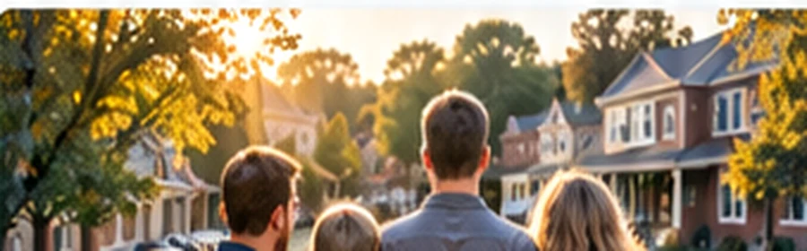
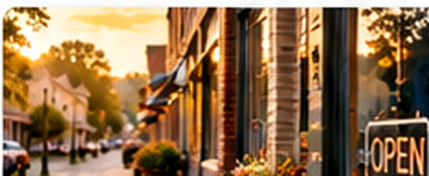
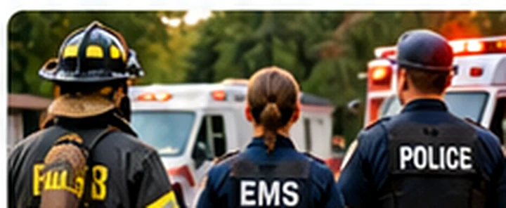
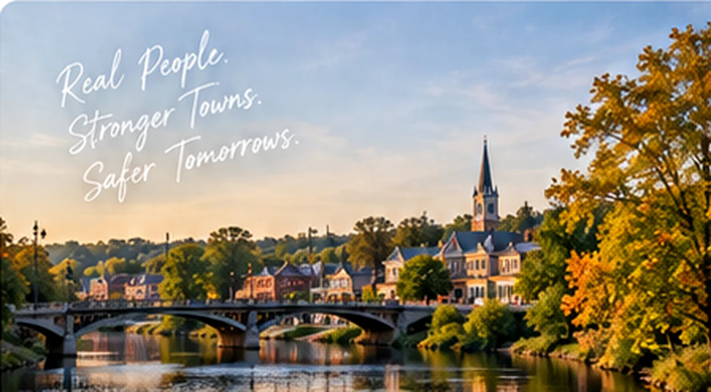

Neighbors
The people who live these streets every day.
Community Shields brings residents, local businesses, and fire, EMS, and police departments together around a simple idea: a community that stands together stays safer together. Your town could be part of what comes next.
Free to express interest No donations collected here
The idea
Different roles. A shared home. Stronger together.
Community Shields connects neighbors, local businesses, and public-safety professionals around practical needs that help communities become safer, stronger, and more prepared.

The people who live these streets every day.

The ones who keep the lights on.

The ones who run toward it.
Why civic unity
Public safety is stronger when the whole community takes part. Neighbors, local businesses, and our fire, EMS, and police departments all bring something different. When those pieces come together, everyone can be more prepared and better connected.
Community Shields gives towns a way to rally around practical needs, build stronger relationships, and support the people who show up for us — every day.
Help start a conversation in your town
How it starts
Tell us your town is interested. It takes less than a minute.
We'll learn about the town's needs, ideas, and people.
With local input and appropriate approvals, a public needs page can take shape.
Community pages and initiatives are a proposed next phase, subject to community participation and necessary approvals.
Get on the list
Neighbor, local business, firefighter, EMT, police officer, or town leader — every good initiative starts with someone saying, “I'm interested.”
Tell us a little about your community. Your note goes directly to the Community Shields team.
“One quiet promiseNo donations collected here. No politics. Just neighbors and the people who protect them, finally on the same page.
Tell us where you'd like to see a shield.
Good questions
Building community trust means being clear about what Community Shields is — and what it isn't.
No. Joining this interest list is free, and this website does not accept donations or payments.
No. This site is for civic collaboration and potential public-safety support projects. For emergencies, call 911 or your local emergency number.
Community Shields is forming. Interest submissions are not proof of any department's approval, affiliation, funding, or partnership. Collaborations would be confirmed directly with participating organizations.
A future page could highlight locally verified needs, approved initiatives, community partners, and updates on progress. Specific features and publication would depend on local input and permissions.
Your message is delivered to the project team's inbox for review. There is no automatic enrollment or obligation.
Stronger together
Your neighborhood. Your town. A shared commitment to the people who protect it.